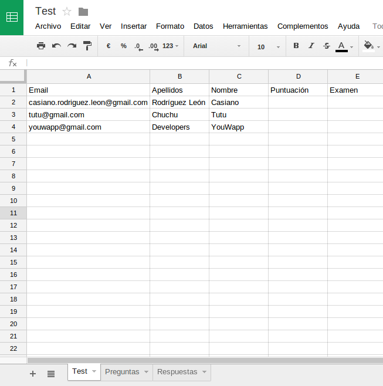
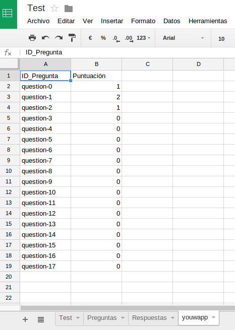

Ejecutando la aplicación
En esta sección se explicará visualmente las funciones que realiza la aplicación:
- Si el alumno visita el cuestionario antes de que esté abierto, verá la siguiente página:
Figura B.9:
Mensaje anunciando que el cuestionario no está abierto
|
|
- Si el alumno visita el cuestionario después de que se haya cerrado, verá la siguiente página:
Figura B.10:
Mensaje anunciando que el cuestionario está cerrado
|
|
- Tanto los alumnos como los profesores verán esta página al iniciar sesión:
Figura B.11:
Página de iniciar sesión
|
|
- El profesor verá esta página cuando vaya a activar el cuestionario:
Figura B.12:
Página de activar cuestionario
|
|
- Tanto los alumnos como los profesores verán esta página para dar permisos a la aplicación al iniciar sesión con Google:
Figura B.13:
Página de dar permisos a la aplicación
|
|
- Mientras el profesor no haya activado el cuestionario, los alumnos verán esta página:
Figura B.14:
Mensaje anunciando que el cuestionario aún no está activado
|
|
- Cuando el profesor active el cuestionario verá esta página. Puede ir a Google Drive para comprobar que la hoja de cálculo
se ha creado correctamente o visitar el cuestionario desplegado:
Figura B.15:
Mensaje anunciando que el cuestionario ha activado
|
|
- Así se vería el cuestionario desplegado:
Figura B.16:
Cuestionario desplegado
|
|
- Cuando el profesor termine de comprobar el cuestionario y pulse Enviar, verá la siguiente pantalla, que le permitirá regresar al cuestionario o ver
su carpeta de Google Drive.
Figura B.17:
Mensaje anunciando que ha finalizado la revisión del cuestionario
|
|
- Esto es lo que verá el profesor en su carpeta de Google Drive.
Figura B.18:
Ficheros dentro de la carpeta del cuestionario en Google Drive
|
|
- Esta es la hoja de cálculo creada con toda la información. Esta es la primera hoja, que contiene la información de los alumnos.
Figura B.19:
Hoja de cálculo con la información de los alumnos
|

|
- Esta es la segunda hoja, que contiene la información de las preguntas.
Figura B.20:
Hoja de cálculo con la información de las preguntas
|
|
- Esta es la tercera hoja, que contiene la información de las respuestas correctas.
Figura B.21:
Hoja de cálculo con la información de las respuestas correctas
|
|
- Cuando un alumno complete el cuestionario, verá la siguiente pantalla. Podrá repetir el cuestionario todas las veces que desee dentro de la
fecha permitida:
Figura B.22:
Mensaje anunciando que ha completado cuestionario
|
|
- Una vez completado el cuestionario, se creará una nueva hoja dentro de la hoja de cálculo del profesor con la puntuación que ha
sacado el alumno en cada pregunta:
Figura B.23:
Hoja de cálculo con la puntuación por preguntas
|

|
- En la primera hoja, se añadirá la información del alumno que hizo el cuestionario, su nota y un enlace a la copia del examen que realizó.
Figura B.24:
Información actualizada del alumno que realizó el cuestionario
|
|
- Dentro de la carpeta de Google Drive del profesor se creará, además, una copia del cuestionario con las respuestas que puso el alumno.
Figura B.25:
Listado de ficheros en Google Drive con la copia hecha por el alumno
|
|
- Por último, esta sería la copia del cuestionario generada con las respuestas del alumno:
Figura B.26:
Copia del cuestionario con las respuestas del alumno
|
|
Juan José
2014-07-10
![\includegraphics[width=0.9\textwidth]{images/app1.eps}](app1.png)
![\includegraphics[width=0.9\textwidth]{images/app2.eps}](app2.png)
![\includegraphics[width=0.9\textwidth]{images/app3.eps}](app3.png)
![\includegraphics[width=0.75\textwidth]{images/app4.eps}](app4.png)
![\includegraphics[width=0.6\textwidth]{images/app5.eps}](app5.png)
![\includegraphics[width=0.75\textwidth]{images/app6.eps}](app6.png)
![\includegraphics[width=0.8\textwidth]{images/app7.eps}](app7.png)
![\includegraphics[width=1\textwidth]{images/app8.eps}](app8.png)
![\includegraphics[width=0.8\textwidth]{images/app9.eps}](app9.png)
![\includegraphics[width=0.6\textwidth]{images/app10.eps}](app10.png)
![\includegraphics[width=1.1\textwidth]{images/app12.eps}](app12.png)
![\includegraphics[width=0.8\textwidth]{images/app13.eps}](app13.png)
![\includegraphics[width=1\textwidth]{images/app14.eps}](app14.png)
![\includegraphics[width=1.1\textwidth]{images/app16.eps}](app16.png)
![\includegraphics[width=0.6\textwidth]{images/app17.eps}](app17.png)
![\includegraphics[width=1\textwidth]{images/app18.eps}](app18.png)